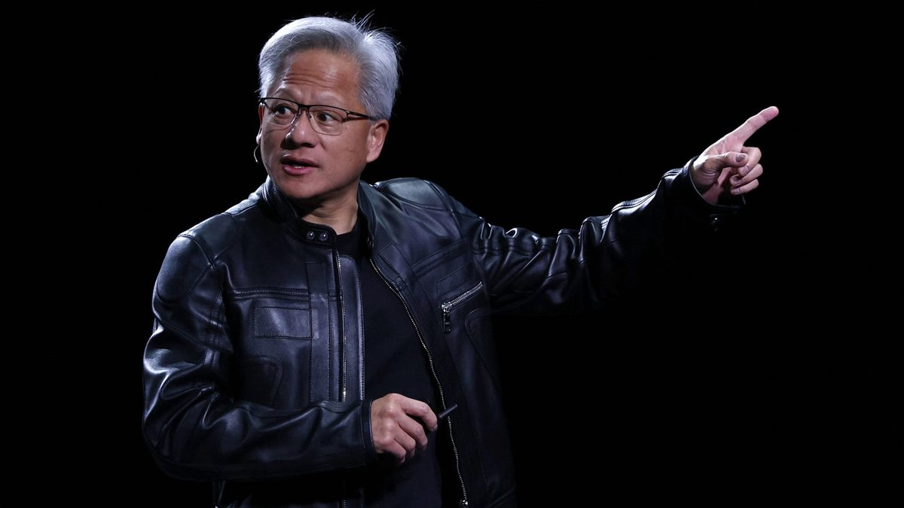

Nvidias bestyrelse har holdt krisemøde om at fyre Jensen Huang
Efter en ny afsløring om en affære med en direktør i selskabet faldt aktien over 9 % efter lukketid.

Nvidias bestyrelse mødtes onsdag aften for at afgøre, om topchef og medstifter Jensen Huang skal afsættes, bekræfter CNBC. Wall Street Journal skrev først, at bestyrelsen forbereder at tvinge ham ud, og Bloomberg skriver, at den arbejder med et eksternt firma om mulige afløsere og overvejer en midlertidig topchef. Ved redaktionens slutning var der ingen afgørelse.
Udløseren var New York Times' afsløring af, at Huang har haft et forhold til Kimberly Powell, Nvidias vicedirektør for sundhed, som refererede til ham. Det kom få dage efter, at han indrømmede en affære med en kvinde, som amerikansk efterretningstjeneste mener er kinesisk spion.
Aktien faldt over 9 % efter lukketid og var i forvejen på vej mod sjette uge i træk med fald. Ifølge Reuters kan Nvidia have tabt omkring 600 milliarder dollar i markedsværdi siden skandalen begyndte. Bestyrelsen kan afsætte Huang med simpelt flertal, og regnskabet for kvartalet kommer 17. november.
Kilde: CNBC · Læs mere →